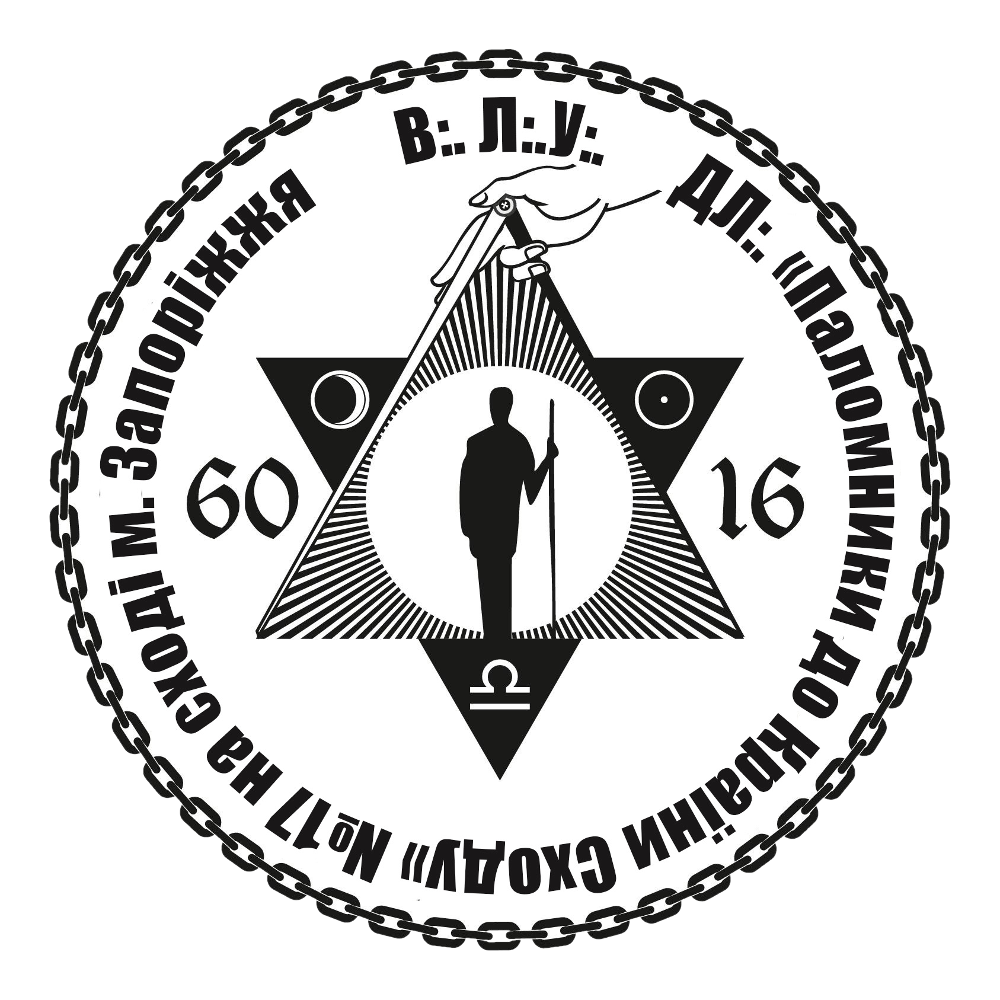
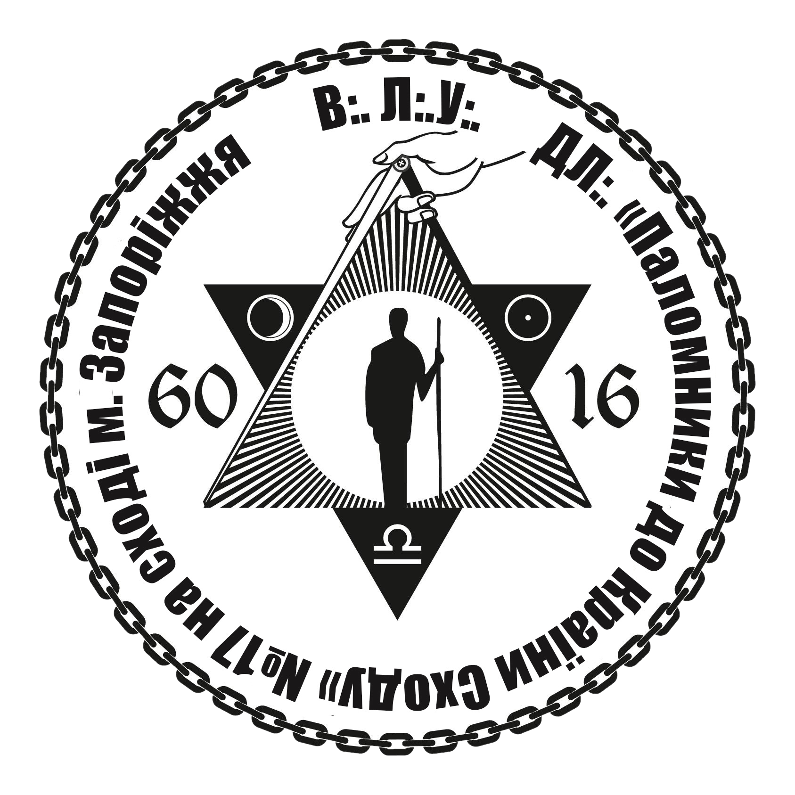
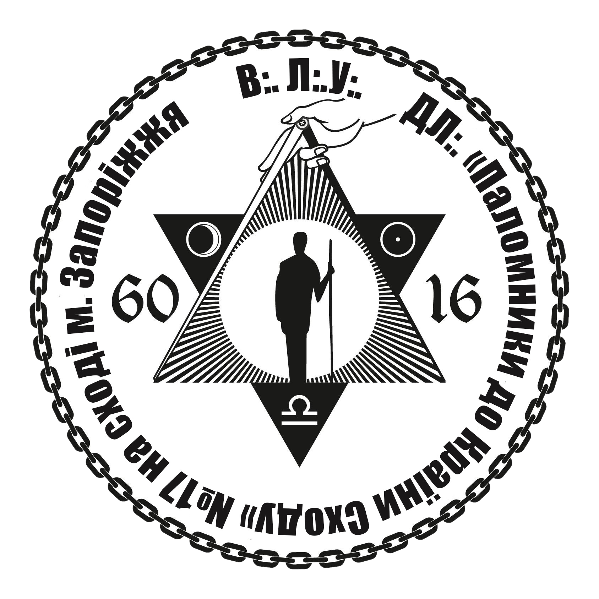

Достойна Ложа
"Паломники до Країни Сходу"
Достойна Ложа "Паломники до країни Сходу" регулярно заснована Великою Ложею України на Сході м. Запоріжжя під номером 17

Достойна Ложа "Паломники до країни Сходу" регулярно заснована Великою Ложею України на Сході м. Запоріжжя під номером 17
В Масонстві існує кодекс честі і правила, які регламентують поведінку і життя масонів.
Усередині всіх лож світу триває безперервна прихована робота по вихованню Братів, які тільки
завдяки своїм невпинним довгостроковим працям стають справжніми масонами. Саме завдяки
саморозвитку і впливу масонського світла багато з Братів на протязі людської історії ставали
одними з найвидатніших людей світу: Г.Сковорода, І.Франко, М.Грушевський, В.Вернадський,
Д.Яворницький, П.Яблочков (винахідник електричної лампи), О.С.Пушкін, А.Сент-Екзюпері,
Г.Гессе, Іоганн Вольфганг фон Гете, А.Блок, Бенджамін Франклін, Джордж Вашингтон і багато
інших – перелік видатних Братів минулого можна продовжувати майже нескінченно.
Тільки
певного типу люди можуть бути вільними мулярами (free masons, масонами). Ось чому на протязі
багатьох століть Братство ніколи не було масовим.
Прохач повинен бути чоловіком старшим ніж 21 рік, вільним та доброї слави
– так твердить одна з наших Ландмарок, яка ніколи не змінювалась. Він повинен бути доброю
людиною з високими морально-етичними якостями. Тому багато прохачів відхиляються в процесі
спілкування з ними. Також бувають випадки коли зібрання братів вирішує, що кандидат прийшов
занадто рано, йому слід постукати в двері Ложі пізніше, коли пройде час і він буде готовий
для цього.
Насправді у ложах збираються і працюють фахівці з різних напрямків
діяльності. В усіх країнах однаково – серед постійних членів лож завжди є держслужбовці,
викладачі, лікарі, юристи, військовослужбовці, бізнесмени, підприємці, митці, журналісти,
пісменники та інші. Всіх їх об'єднує доброчесність і сердечне прагнення зміцнювати нашу
безкорисну Братерську любов.